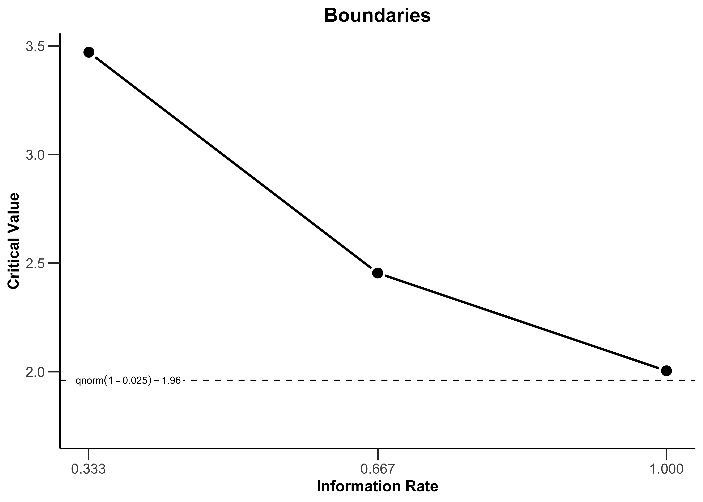
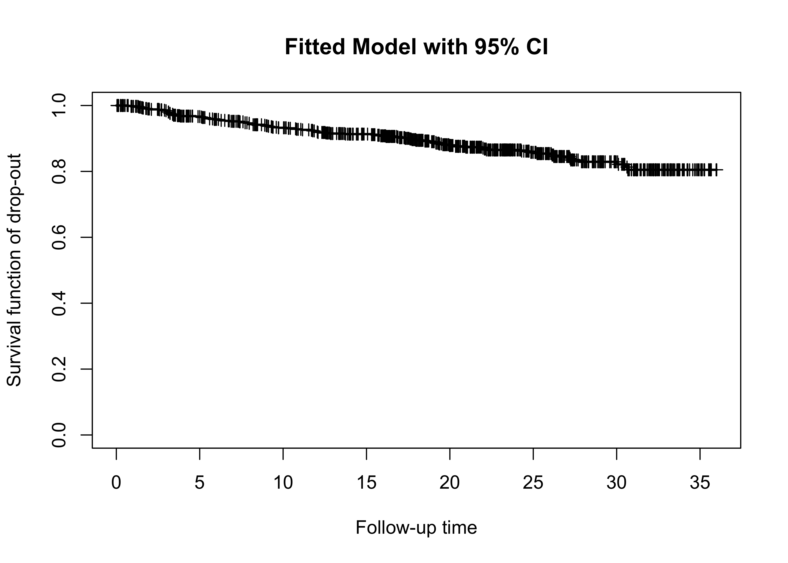
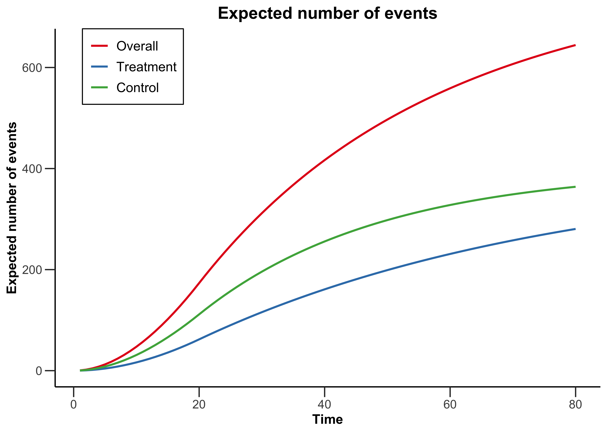
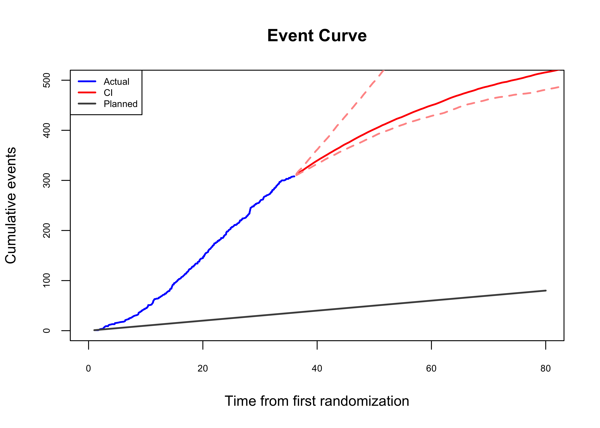

knitr::opts_chunk$set(
dev = "png",
dpi = 300,
fig.width = 7,
fig.height = 5
)
library(tidyverse)
library(rpact)
library(PWEXP)rpact
Links
Start
# create an inverse normal design with default parameters
design <- getDesignInverseNormal()
design %>% summary()Sequential analysis with a maximum of 3 looks (inverse normal combination test design)
O’Brien & Fleming design, one-sided overall significance level 2.5%, power 80%, undefined endpoint, inflation factor 1.0174, ASN H1 0.8562, ASN H01 0.9831, ASN H0 1.0149.
| Stage | 1 | 2 | 3 |
|---|---|---|---|
| Fixed weight | 0.577 | 0.577 | 0.577 |
| Cumulative alpha spent | 0.0003 | 0.0072 | 0.0250 |
| Stage levels (one-sided) | 0.0003 | 0.0071 | 0.0225 |
| Efficacy boundary (z-value scale) | 3.471 | 2.454 | 2.004 |
| Cumulative power | 0.0329 | 0.4424 | 0.8000 |
# display the design characteristics
design %>% getDesignCharacteristics()Inverse normal combination test design characteristics
- Number of subjects fixed: 7.8489
- Shift: 7.9855
- Inflation factor: 1.0174
- Informations: 2.662, 5.324, 7.985
- Power: 0.03292, 0.44240, 0.80000
- Rejection probabilities under H1: 0.03292, 0.40948, 0.35760
- Futility probabilities under H1: 0, 0
- Ratio expected vs fixed sample size under H1: 0.8562
- Ratio expected vs fixed sample size under a value between H0 and H1: 0.9831
- Ratio expected vs fixed sample size under H0: 1.0149
# plot the design with default type 1 (Boundary Plot)
design %>% plot()
Example: PFS simulation using protocol assumptions
This is an example for simulating the PFS events to get the predicted projection time and confidence internval based on the protocol assumption, considering actual enrollment and drop out rate per month.
ii <- 1:100
mon.enr.6 <- rep(40, 20)
start_date <- as.Date("2022-08-01")
get.followup.sap <- function(ii){
set.seed(92480+ii)
dat.sap.sim <-
simdata(group=c('trt','ctrl'),
allocation = c(1, 1),
n_rand = mon.enr.6, ## real enrollment
event_lambda = c(log(2)/20*0.75,
log(2)/20),
drop_rate = 0.008, ## monthly rate
total_sample = 800,
add_column = c('followT','event', 'followT_abs','censor'))
enr2 <- dat.sap.sim %>%
filter(event == 1) %>%
arrange(followT_abs)
return(enr2 %>% select(followT_abs) %>%
slice(c(344, 458)))
}
suppressMessages(
sim.res.sap <- map_dfc(.x = ii, .f = get.followup.sap)
)
sim.res.sap.df <- as.data.frame(sim.res.sap)# interim analysis
x344 <- quantile((as.numeric(sim.res.sap.df[1, ])),
probs = c(0.025, 0.5, 0.975))
x344 2.5% 50% 97.5%
28.94270 31.43274 33.65996 start_date + x344*30.4375 2.5% 50% 97.5%
"2024-12-28" "2025-03-14" "2025-05-21" # final analysis
x458 <- quantile((as.numeric(sim.res.sap.df[2, ])),
probs = c(0.025, 0.5, 0.975))
x458 2.5% 50% 97.5%
39.86313 44.67826 49.11732 start_date+ x458*30.4375 2.5% 50% 97.5%
"2025-11-26" "2026-04-21" "2026-09-04" Example: event prediction based on the actual data
Simulate PFS data
Suppuse the actual follow up time is 36 months.
set.seed(12345)
mon.enr.6 <- rep(40, 20)
data <- dat.sap.sim <-
simdata(group=c('trt','ctrl'),
allocation = c(1, 1),
n_rand = mon.enr.6, ## real enrollment
event_lambda = c(log(2)/25*0.5,
log(2)/25),
drop_rate = 0.0065, ## monthly rate
total_sample = 800,
add_column = c('followT','event', 'followT_abs','censor')) %>%
mutate(drop = as.numeric((followT_abs <= 36) & (censor == 1))) %>%
mutate(censor = as.numeric(drop == 1 | followT_abs > 36)) %>%
mutate(followT_abs = pmin(36, followT_abs),
followT = pmin(followT, 36 - randT)) %>%
mutate(event = 1 - censor)head(data) ID group randT eventT dropT followT event followT_abs censor
1 1 trt 18.030343 135.339681 72.068327 17.969657 0 36.00000 1
2 2 trt 11.598061 27.124264 3.811665 3.811665 0 15.40973 1
3 3 trt 5.295963 68.441549 34.330874 30.704037 0 36.00000 1
4 4 trt 12.396894 130.057004 335.566711 23.603106 0 36.00000 1
5 5 trt 9.678056 27.298814 117.665749 26.321944 0 36.00000 1
6 6 trt 12.774233 9.732452 127.038945 9.732452 1 22.50669 0
drop
1 0
2 1
3 0
4 0
5 0
6 0table(data$event)
0 1
492 308 table(data$drop)
0 1
707 93 fit_b1 <- pwexp.fit(data$followT, data$event, nbreak = 1)
fit_b1 brk1 lam1 lam2 likelihood AIC BIC
108 4.358788 0.02780412 0.01929306 -1491.098 2988.195 3002.249plot_survival(data$followT, data$drop,
ylab='Survival function of drop-out',
main='Fitted Model with 95% CI')
invisible(capture.output(
fit_b1_boot <- boot.pwexp.fit(fit_b1, nsim = 100, seed = 0102)
))
invisible(capture.output(
fit_censor_boot1 <- boot.pwexp.fit(data$followT,
data$drop, nbreak = 1,
nsim = 100, seed=0102)
))
cut_indicator = 1- data$event
cut_indicator[data$drop==1]=0;
anat=(as.Date("2025-08-01") -
as.Date("2022-08-01"))/30.4375
predicted_boot11 <- predict(fit_b1_boot,
cut_indicator=cut_indicator,
analysis_time=anat,
censor_model_boot=fit_censor_boot1,
future_rand=NULL,seed=0102,
output = "summary" )
|
| | 0%
|
|======= | 10%
|
|============== | 20%
|
|===================== | 30%
|
|============================ | 40%
|
|=================================== | 50%
|
|========================================== | 60%
|
|================================================= | 70%
|
|======================================================== | 80%
|
|=============================================================== | 90%
|
|======================================================================| 100%plot.new()
pred_time11 <- plot_event(predicted_boot11, xyswitch=T,
eval_at = c(344,458), alpha = 0.05)pred_time11 n_event time 2.5% time 97.5% time
[1,] 344 40.64383 38.42825 42.24332
[2,] 458 61.96626 46.44132 71.34709sumDt11 =as.data.frame(pred_time11);
sumDt11$time =start_date + as.data.frame(pred_time11)$time*30.4375
sumDt11$`2.5% time` = start_date + as.data.frame(pred_time11)$`2.5% time`*30.4375;
sumDt11$`97.5% time` = start_date + as.data.frame(pred_time11)$`97.5% time`*30.4375;
sumDt11 n_event time 2.5% time 97.5% time
1 344 2025-12-20 2025-10-13 2026-02-06
2 458 2027-09-30 2026-06-14 2028-07-11Event curve plot
accrualTime <-
getAccrualTime(accrualTime = 0:(20-1),
accrualIntensity = rep(40, 20),
maxNumberOfSubjects = 800)
y <- getEventProbabilities(time = 1:80,
lambda2 = log(2)/20,
accrualTime = accrualTime,
hazardRatio = 0.5,
allocationRatioPlanned = 1)
plot_obj <- rpact:::plot.EventProbabilities(y, plot = FALSE)
yValues <- plot_obj$data$yValues
plot_event(data$followT_abs, data$event, ylim = c(0, 500),
xlim = c(0, 80), col = "blue", main = "Event Curve", cex.axis = 0.65)
plot_event(predicted_boot11)
lines(x = 1:80, y = yValues[1:80], col = "grey30", lwd = 2)
legend("topleft", c("Actual", "CI", "Planned"), col = c("blue", "red", "grey30"),
lwd = 2, cex = 0.65)